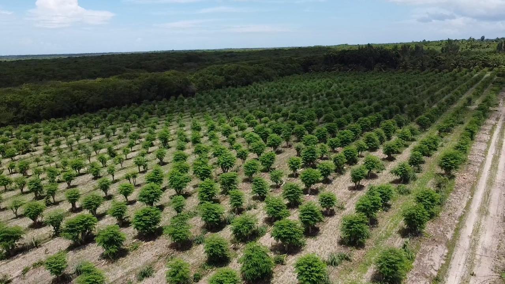

एग्रोमोरिंगा से मिलिए
मोरिंगा की खेती में
मोरिंगा की खेती में
अग्रणीता और उत्कृष्टता
एग्रोमोरिंगा, पार्नाइबा-पिआउ, ब्राज़ील में स्थित, ब्राज़ीलियाई कृषि व्यवसाय के लिए प्रमाणित मोरिंगा ओलेइफेरा बीजों में अग्रणी है। हम एकमात्र कंपनी हैं जिसके पास MAPA में पंजीकृत बीज की किस्म है, जो उत्कृष्ट आनुवंशिकी और सिद्ध परिणाम सुनिश्चित करती है।
Arthur Henrique Begliomini (कृषि इंजीनियर, मिट्टी और मोरिंगा विशेषज्ञ, अंतरराष्ट्रीय संदर्भ) और Rhayana Aline (CEO वाणिज्यिक/संचालन, ग्रामीण उत्पादक, मनोविज्ञानी और ब्राज़ील मोरिंगा एसोसिएशन की उपाध्यक्ष) द्वारा स्थापित, हम विज्ञान, अभ्यास और खेती के प्रति जुनून को जोड़ते हैं।
+50ha
खेती योग्य क्षेत्र
100%
प्रमाणित बीज
+500
साझेदार उत्पादक




हमारे खेतों और ग्राहकों की वास्तविक तस्वीरें